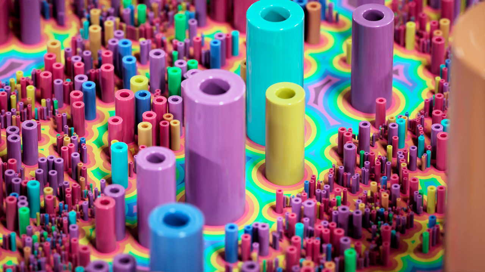
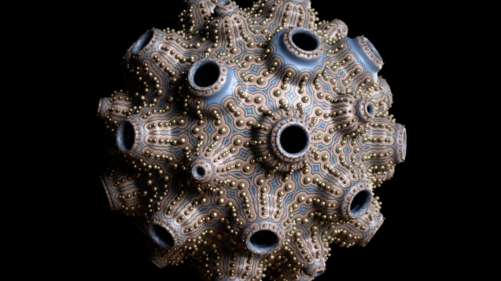
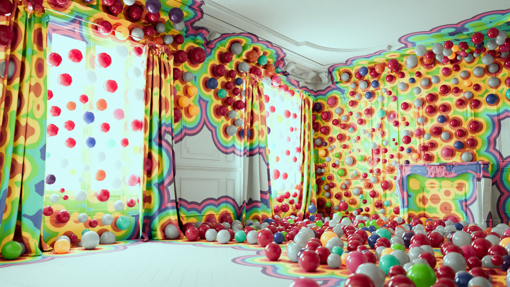
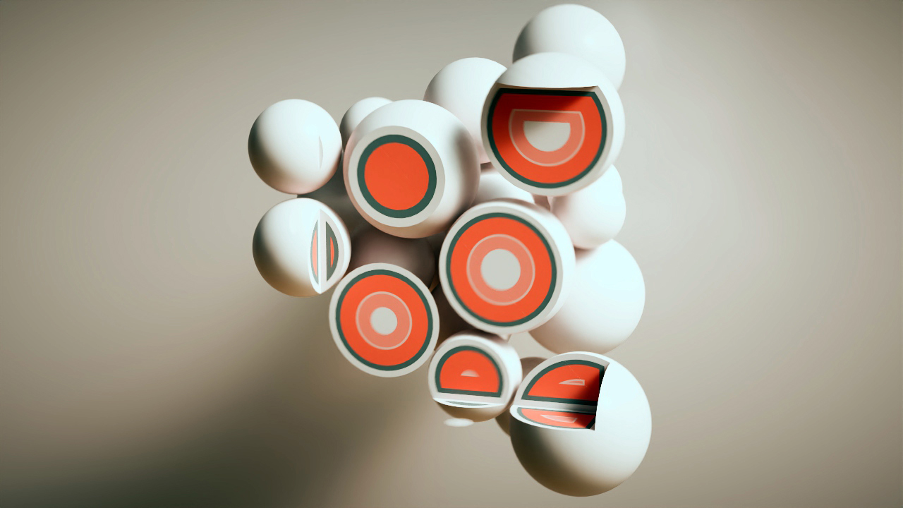
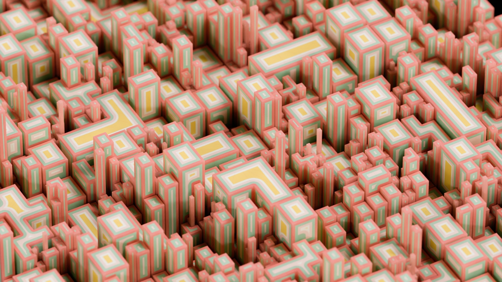
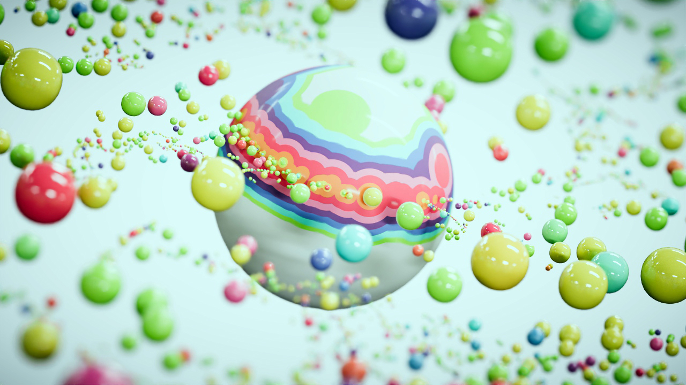
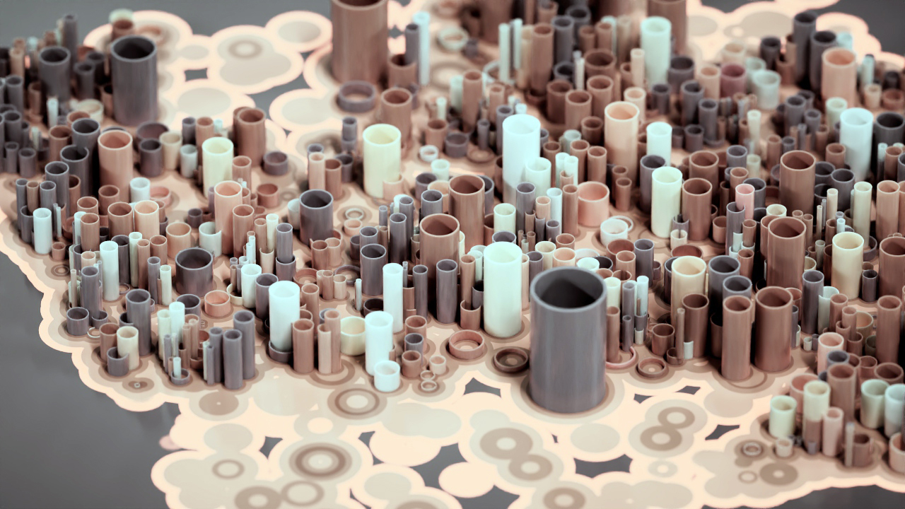
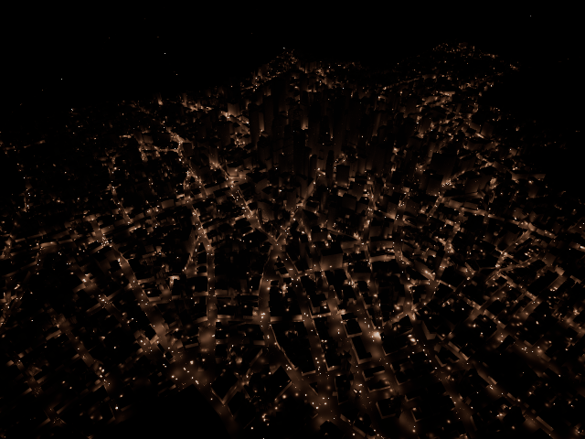
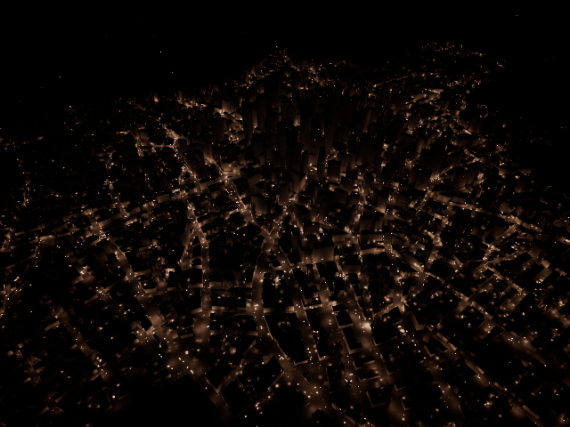
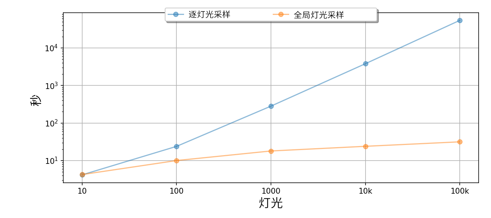

29 March 2023
MtoA 5.3.1 introduces Arnold 7.2.1.0. See also the MtoA 5.3.0 release notes.
MtoA 5.3.1, Bifrost 2.7.0.1, and MayaUSD 0.23.0 all use a version of USD that provides important security enhancements. We recommend that you upgrade to these versions of the plug-ins. For more information on version compatibility, see Maya USD, Bifrost, and Arnold Compatibility.
MtoA 5.3.1 works with the following Maya plugins:
|  |  |  |  |  |  |  |
options.light_samples to a non-zero value. When enabled, the light sample settings on individual lights are ignored and the overall, global contribution of all lights together is computed using options.light_samples number of samples only. In this release, global light sampling does not apply to environment, directional lights, volumes, and GPU rendering. See the full documentation for more details. (ARNOLD-12860)|  |  |
| without Global Light Sampling: 2 mins, 41 secs | with Global Light Sampling: 44 secs |
|  |
| For equal-quality renders of this scene, the new light sampling technique becomes progressively faster than per-light sampling as more lights are used. |
Support per-channel connections during shader import: Shading trees with per-channel connections will now import correctly in Maya when using "Import Shaders" (MTOA-353)
Support multiple shader outouts during shader import : Shaders with multiple outputs will be imported correctly, when using "Import Shaders" (MTOA-1298)
Improved triangle intersector: Triangle intersection is now 20% faster and less likely to allow rays to incorrectly slip between triangles, which manifested as holes in a mesh. (ARNOLD-4136)
Faster loading of OpenVDB volumes in Windows: On Windows, OpenVDB volumes are faster to load, especially on certain many-core CPUs. On one 112-core machine we've seen 4.5x faster loads; other CPUs saw smaller speedups. (ARNOLD-12633)
Faster instancer initialization: The instancer procedural is now faster on single-socket CPUs. We've seen up to 1.6x faster node initialization on some machines. (ARNOLD-12963)
alembic.objectpath changed to an array : The Alembic procedural parameter objectpath is now an ARRAY type, so multiple object paths can be given to a single Alembic procedural. (ARNOLD-12950)
uv_transform improvements : The uv_transform shader now has a wset parameter, which is the name of a float user data value. A new matrix attribute uvw_matrix returns new coordinates based on the uvw values. If the new attribute uvcoords is linked to a shader, the values returned by that shader override the uv coordinates, at the cost of efficiency because this prevents Arnold from using the correct filtering. (ARNOLD-13049, ARNOLD-13156)
Motion blur with set_transform: The set_transform operator now has a matrix attribute, that can be animated. This allows set_transform to apply animations and get correct motion blur. (ARNOLD-13068)
Update OSL : Open Shading Language (OSL) has been updated to version 1.12.9. (ARNOLD-11791)
Update Boost: The Boost library has been updated to 1.81.0. (ARNOLD-12271)
Update zlib: The zlib library has been updated to 1.2.13. (ARNOLD-13097)
Update Cryptomatte: Cryptomatte has been updated to 1.2.2. (ARNOLD-13101), so sidecar manifests now work with Solaris.
autotx metadata in tx files: TX files generated with AutoTX now have the metadata autotx 1 added to the TX file. (ARNOLD-13025)
New environment variable for external control of autotx: The new environment variable ARNOLD_AUTO_GENERATE_TX overrides the options parameter texture_auto_generate_tx. This environment variable can be either never or when_outdated, which are equivalent to disabling or enabling the global autotx option. (ARNOLD-12875)
Update Arnold-USD: USD has been updated to 22.11 (ARNOLD-13075, ARNOLD-13099)
Support more MaterialX shaders in USD. The MaterialX Standard Library shaders for creating and manipulating BSDFs, VDFs, and EDFs, such as layer, mix, and add, are now supported in USD as well as the following shaders : triplanarprojection, switch, and constant.
Convert cube, sphere, cylinder, capsule primitives as meshes in the procedural. Geometric primitives are now converted to Hydra meshes instead of Arnold primitives. usd#1318 usd#1451
Support render delegate products for all Arnold drivers. When rendering using Hydra, with husk for example, the render delegate now uses the RenderProduct drivers. usd#1422
Arnold Render Products in Hydra: Setting the render product type to "arnold" (instead of the default "raster") will now render the scene with Arnold drivers. This means we support the driver parameters defined in the Arnold tab of the render products. usd#1423
Instanced skinned meshes: Skinned instances are now rendering in the correct transform and order. usd#1412
fStop and aperture_size: The procedural and render delegate now support both the fStop and the aperture_size parameters in the camera. usd#1421
Support combination of half and full precision AOVs in the procedural. The procedural can now render a combination of half- and full- precision aovs. usd#1416
Always read RenderVar aov:name as an output layer. The RenderVar parameter driver:parameters:aov:name is now used as the output aov layer name. usd#1408
Support Render Product names: Render Product names are now used as the Arnold output layer names. In exr files, each layer name can now be customized. usd#1408
Support asset attributes for filenames when no tokens are present. "filename" Arnold attributes are now SdfAssetPaths in USD usd#1163
Filename attributes as Assets: In Arnold shaders (like the image shader), the filename is now an asset parameter. This allows Arnold to support relative paths in a more consistent way for USD. usd#1418
Enable/disable crash handler for the session: The new function AiSetSystemHandlers() and the environment variable ARNOLD_SYSTEM_HANDLER_MASK have been added, allowing a user to mask Arnold built-in system handlers. The supported masks are listed in AtSystemHandlerMask and currently allow all handlers to be either fully enabled or disabled. (ARNOLD-13014)
Check if TX file is up to date: The new function AiTextureTxFileNeedsUpdate() returns true if the TX file needs to be regenerated from its source texture. This can happen if the source texture was modified or if Arnold was updated with a newer OpenImageIO library. (ARNOLD-12994)
Get original texture name for TX file: The new function AiTextureGetTxSourceFileName() returns the name of the texture file used to generate a given TX file. (ARNOLD-13047)
Auto Generate TX and OpenImageIO versioning: Arnold now regenerates tx files only if the OIIO version in Arnold is newer. Using an older Arnold with an older OIIO does not force a regeneration of the tx files. (ARNOLD-12992)
Auto Generate TX on write-protected folder: When a TX file cannot be generated because the target folder is write protected, the TX file is generated in the system temp folder. (ARNOLD-13039)
Minimum driver requirement raised: The minimum supported NVIDIA driver versions are now 512.78 (for Windows) and 510.73.05 (for Linux). (ARNOLD-13169)
MTOA-1366 USD Lights in a usdProxyShape appear twice in the scene
MTOA-1359 IPR gets triggered when selecting a prim in a usdProxyShape, when the USD file contains lights
MTOA-1300 - Importing Arnold Shaders does not import uv_projection.matrix
MTOA-1234 - Account for scene unit conversion when exporting recursive StandIns
ARNOLD-13171 - AiMsgDebug messages don't appear in Arnold log
ARNOLD-13090 - Opening a background image in the ARV/Display tab crashes MtoA IPR
ARNOLD-12964 - Rare crash when threads are creating AtStrings at the same time
ARNOLD-13032 - AiTextureAutoTxFlags not resolving auto color space
ARNOLD-13115 - Use textures in texture_auto_tx_path even when autotx generation is disabled
ARNOLD-13197 - Log callbacks ignore maximum number of warnings
ARNOLD-13201 - Crashes when default universe is null
ARNOLD-13350 - Set AtNode LocalData pointer to null after node_finish is called
ARNOLD-12995 - [MaterialX] Support nodes from the MaterialX PBR library in USD
ARNOLD-13073 - [MaterialX] AiMaterialxGetOslShaderCode fails on ND_switch_color3
ARNOLD-13074 - [MaterialX] AiMaterialxGetOslShaderCode fails on ND_separate3_color3
ARNOLD-13107 - Mesh lights occasionally do not render
ARNOLD-13163 - [GPU] CPU memory leak when rendering multiple frames on the GPU
usd#1412 - Fix instance skinned mesh in incorrect position and order.
usd#1438 - Creating surface models from PBR nodes doesn't work
usd#1433 - Material binding not handling correctly the different scopes
usd#1447 - MaterialX Triplanar renders black
usd#1427 - Motion blur differences between procedural and delegate
usd#1442 - Velocity motion blur doesn't work if PointInstancer has more than one prototype
usd#1354 - Vertex mismatch with velocity blur and point normals in Hydra
usd#1420 - Unify fStop and aperture_size
usd#1430 - deepexr driver parameters like depth_tolerance are ignored
usd#1411 - append parameter (for checkpointing renders) is not translated
usd#1413 - Crash in UsdSkel in the procedural
usd#1352 - Skinned instances in wrong world position
usd#1394 - USD procedural renders characters in the wrong positions and order
usd#1443 - Incorrect number of motion keys with skinned primvar normals and motion blur